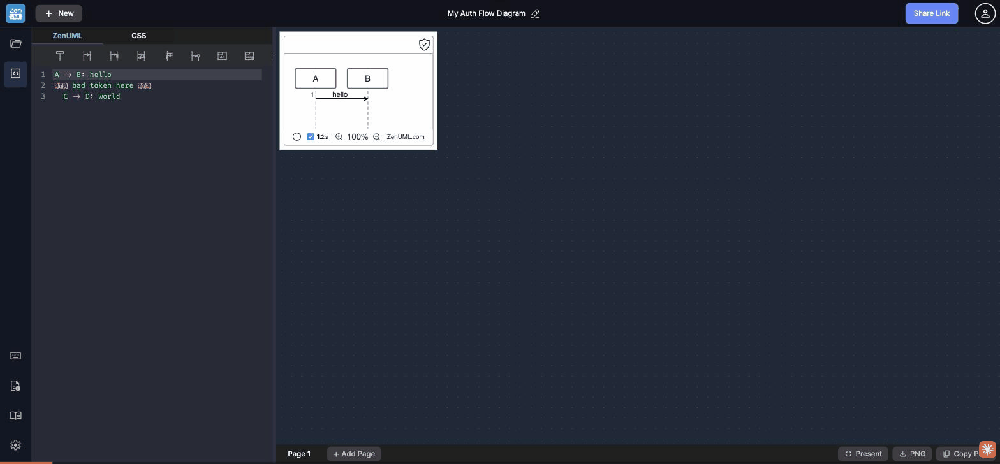

6 icons, 3 interaction patterns, 0 aria-labels — and one panel that can't be closed
Walkthrough of all 6 sidebar icons — click behaviors, panel states, modals, external links.

| Icon | Title | Aria-label | Action | Behavior |
|---|---|---|---|---|
| folder_open | My Library | null | Click | Opens inline panel, replaces editor |
| code_blocks | Code Editor | null | Click | Inert when Library panel is open |
| keyboard | Keyboard Shortcuts | null | Click | Opens modal overlay |
| quick_reference | Cheatsheet | null | Click | Opens modal overlay |
| menu_book | Language Guide | null | Click | Opens external URL in new tab (no indicator) |
| settings | Settings | null | Click | Opens settings modal |
Every sidebar button relies solely on the HTML title attribute for labeling. The button text content is the raw Material Icons ligature string (folder_open, code_blocks, quick_reference, etc.). A screen reader announces these strings verbatim, providing zero semantic value.
title attributes are not announced by most screen readers when focus is managedtitle tooltips are invisible on touch/mobile devices<button title="My Library">folder_open</button><a title="Language Guide" href="..." target="_blank">menu_book</a>ariaLabel: null on every icon
Once "My Library" is opened, the user has no working path back to the Code Editor:
| Action | Expected | Actual |
|---|---|---|
| Click folder icon again | Closes library | No change |
| Click Code Editor icon | Switches to editor | No change |
| Click ‹ Collapse button | Collapses panel | Button disappears, panel stays open |
| Press Escape | Closes panel | No change |
The 6 sidebar icons are distributed in two polarised groups with no visual grouping, separator, or label to explain the split:
My Library: y=61 · Code Editor: y=119 · [540px gap] · Keyboard: y=661 · Cheatsheet: y=719 · Language Guide: y=776 · Settings: y=834
The 6 icons look identical in style but trigger fundamentally different interaction types, with no affordance distinguishing them:
zenuml.com/docs in a new tab — no external link icon (↗), no tooltip warning, no visual distinctionUsers cannot predict the outcome of clicking any icon. An external link inside an icon-only sidebar is a particularly dangerous pattern — the user loses context with no warning.
Minor copy quality issues in the help content:
Cheatsheet (one word); modal header renders "Cheat sheet" (two words) — inconsistent